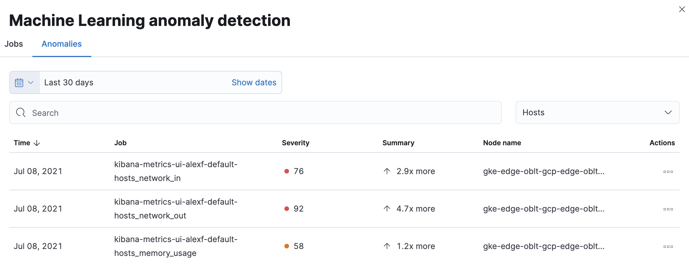

Detect metric anomalies
editWhen the anomaly detection features of machine learning are enabled, you can create machine learning jobs to detect and inspect memory usage and network traffic anomalies for hosts and Kubernetes pods.
You can model system memory usage, along with inbound and outbound network traffic across hosts or pods. You can detect unusual increases in memory usage and unusually high inbound or outbound traffic across hosts or pods.
Enable machine learning jobs for hosts or Kubernetes pods
editCreate a machine learning job to detect anomalous memory usage and network traffic automatically.
Once you create machine learning jobs, you can not change the settings. You can recreate these jobs later. However, you will remove any previously detected anomalies.
- Go to Observability → Infrastructure → Inventory and click the Anomaly detection link at the top of the page.
- You’ll be prompted to create a machine learning job for Hosts or Kubernetes Pods. Click Enable.
-
Choose a start date for the machine learning analysis.
Machine learning jobs analyze the last four weeks of data and continue to run indefinitely.
-
Select a partition field.
By default, the Kubernetes partition field
kubernetes.namespaceis selected.Partitions allow you to create independent models for different groups of data that share similar behavior. For example, you may want to build separate models for machine type or cloud availability zone so that anomalies are not weighted equally across groups.
- By default, machine learning jobs analyze all of your metric data, and the results are listed under the Anomalies tab. You can filter this list to view only the jobs or metrics that you are interested in. For example, you can filter by job name and node name to view specific anomaly detection jobs for that host.
- Click Enable jobs.
-
You’re now ready to explore your metric anomalies. Click Anomalies.
The Anomalies table displays a list of each single metric anomaly detection job for the specific host or Kubernetes pod. By default, anomaly jobs are sorted by time to show the most recent job.
Along with each anomaly job and the node name, detected anomalies with a severity score equal to 50 or higher are listed. These scores represent a severity of "warning" or higher in the selected time period. The summary value represents the increase between the actual value and the expected ("typical") value of the metric in the anomaly record result.
To drill down and analyze the metric anomaly, select Actions → Open in Anomaly Explorer to view the Anomaly Explorer in Machine Learning. You can also select Actions → Show in Inventory to view the host or Kubernetes pods Inventory page, filtered by the specific metric.
These predefined anomaly detection jobs use custom rules. To update the rules in the Anomaly Explorer, select actions → Configure rules. The changes only take effect for new results. If you want to apply the changes to existing results, clone and rerun the job.
History chart
editOn the Inventory page, click Show history to view the metric values within the selected time frame. Detected anomalies with an anomaly score equal to 50, or higher, are highlighted in red. To examine the detected anomalies, use the Anomaly Explorer.